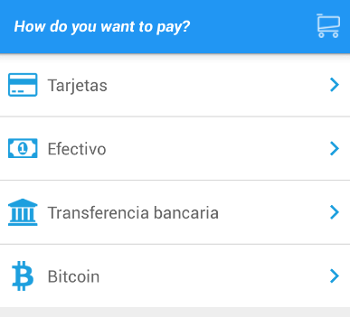
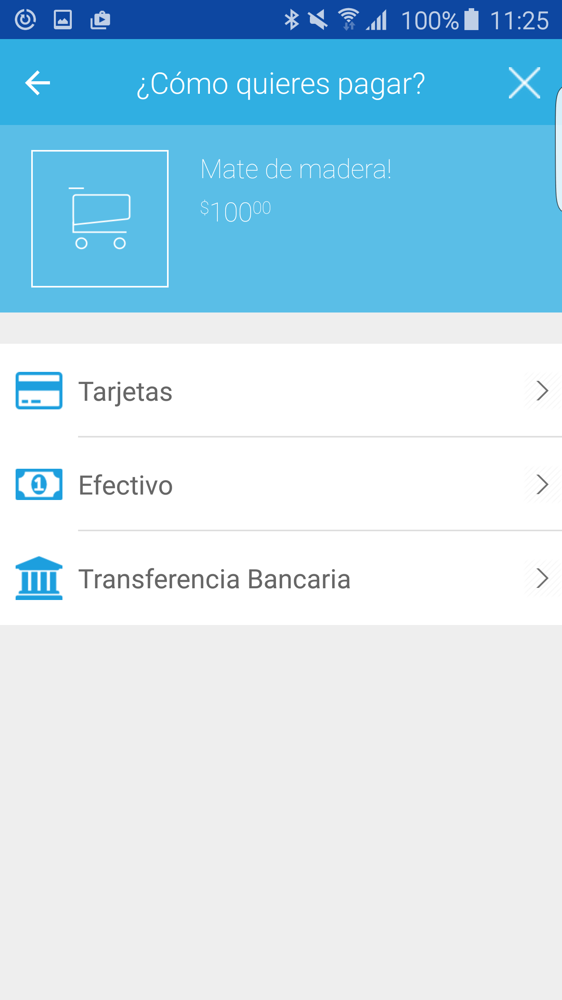
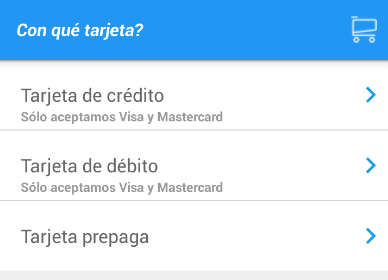
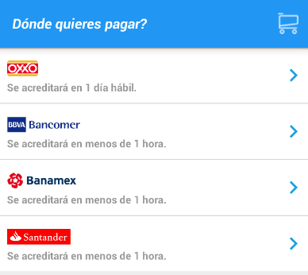
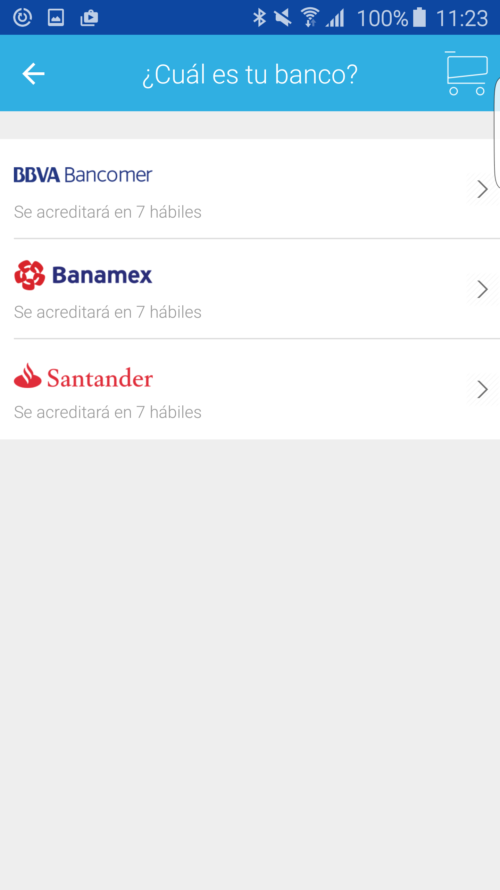
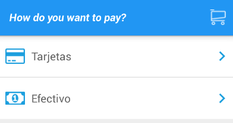
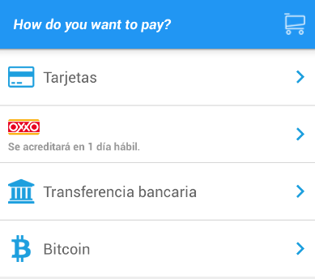

Data-collection UI
We offer you solutions to collect both payment methods and shipping information. Using this flavor, once collected this information, you'll have to make a payment by yourself (if curious, have a look at Make a payment).
Here, you'll learn:
How to launch a payment method selection flowHow our UI looks like
How to get collected data in your launcher activity
How exclude payment methods, payment types and more
How to set a default payment method
Payment methods data collection UI
Add this code to launch the solution:
// Call payment methods selection activity
new MercadoPago.StartActivityBuilder()
.setActivity(activity)
.setPublicKey(yourPublicKey)
.setAmount(BigDecimal.valueOf(100))
.setCurrency(CurrenciesUtil.CURRENCY_ARGENTINA) //Set your country currency
.setPurchaseTitle("Item name")
.startPaymentVaultActivity();
The following screen is shown:
Your users can visualize their purchase information by clicking on the shopping cart icon:
Within this screen, your user will be able to choose a payment method by going into the shown options, as we'll see in the following sections.
Cards option selected
The user will see a list of the available card types supported, for example:
Cash option selected
The user will see a list of the available card types supported, for example:
Bank transfer option selected
The user will see a list of the available card types supported, for example:
Retrieving the data in your activity
Once your user has selected a payment method, you'll have to get it in the activity that launched the payment flow like this:
@Override
protected void onActivityResult(int requestCode, int resultCode, Intent data) {
if(requestCode == MercadoPago.PAYMENT_VAULT_REQUEST_CODE) {
if(resultCode == RESULT_OK) {
Issuer selectedIssuer = (Issuer) data.getSerializableExtra("issuer");
PayerCost selectedPayerCost = (PayerCost) data.getSerializableExtra("payerCost");
Token createdToken = (Token) data.getSerializableExtra("token");
PaymentMethod selectedPaymentMethod = (PaymentMethod) data.getSerializableExtra("paymentMethod");
}
}
else if (resultCode == RESULT_CANCELED) {
//Handle result canceled case
}
}
If a card payment method was selected, you'll get issuer, payer costs(installments), a "token" and the payment method. If any other payment method was selected, you'll just receive a payment mehtod.
With this information, you'll be able to Make a payment
Payment methods exclusions
If desired, you can avoid getting paid with a particular payment method, or any payment methods of a certain type. Also, you could set constraints in the amount of installments a user can select if paying with credit card.
To get familiar with what payment types we handle and how you should manage this information, take a look at our payment types docs.
When starting our payment method selection UI, you can set these exclusions:
Payment type exclusion
In this example, we will exclude digital currency (Bitcoins), and ATM payment types.
//Create list of excluded payment types somewhere in your code
List<String> excludedPaymentMethodIds = new ArrayList<String>(){{
add(PaymentType.DIGITAL_CURRENCY);
add(PaymentType.ATM);
}};
// Call payment methods selection activity
new MercadoPago.StartActivityBuilder()
.setActivity(activity)
.setPublicKey(yourPublicKey)
.setAmount(BigDecimal.valueOf(100))
.setCurrency(CurrenciesUtil.CURRENCY_ARGENTINA) //Set your country currency
.setPurchaseTitle("Item name")
.setExcludedPaymentTypes(excludedPaymentMethodIds);
.startPaymentVaultActivity();
And you'll see this:
Payment method exclusion
In this example, we will exclude all the "cash" payment methods, except "oxxo".
//Create list of excluded payment methods somewhere in your code
List<String> mExcludedPaymentTypes = new ArrayList<String>(){{
add("bancomer");
add("banamex");
add("serfin"); //Santander's id
}};
// Call payment methods selection activity
new MercadoPago.StartActivityBuilder()
.setActivity(activity)
.setPublicKey(yourPublicKey)
.setAmount(BigDecimal.valueOf(100))
.setCurrency(CurrenciesUtil.CURRENCY_ARGENTINA) //Set your country currency
.setPurchaseTitle("Item name")
.setExcludedPaymentMethodIds(excludedPaymentMethods);
.setMaxInstallments(MAX_INSTALLMENTS);
.startPaymentVaultActivity();
And you'll see this:
Installments constraint
In this example, we will set a limit to the amount of installments that will be offered to the payer.
// Call payment methods selection activity
new MercadoPago.StartActivityBuilder()
.setActivity(activity)
.setPublicKey(yourPublicKey)
.setAmount(BigDecimal.valueOf(100))
.setCurrency(CurrenciesUtil.CURRENCY_ARGENTINA) //Set your country currency
.setPurchaseTitle("Item name")
.setExcludedPaymentMethodIds(excludedPaymentMethods);
.setMaxInstallments(6)
.startPaymentVaultActivity();
Tip: all the exclusions and constraints shown can be used together.